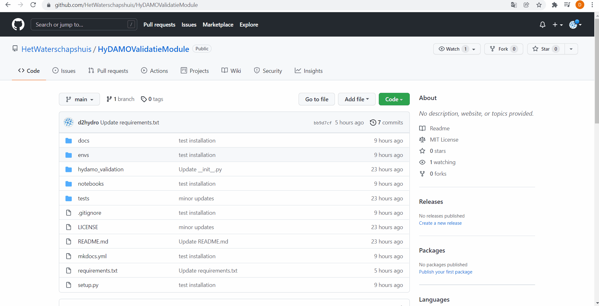
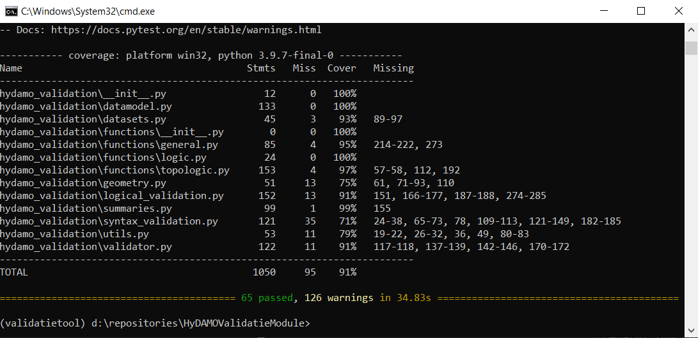

Contribute
For doing contributions you:
- have your own GitHub account
- work with GitHub Desktop or work-round with Git
- can work with GeoPandas and Pytest
We are very happy with contributions that are:
- written similar to existing code (e.g. use of GeoPandas)
- provided with docstrings so it can be documented
- tested with Pytest
You can make a contribution in the following steps:
- Development installation
- Fork and clone and install a copy
- Add and test new code
- Commit your copy and request a merge
The remainder of this guide explains how to do it.
Dev installation
Setup environment
Use the env/dev_environment.yml in the repository to create the conda environment validatietool with all required packages
conda env create -f dev_environment.yml
After installation you can activate your environment in command prompt
Fork repo
Fork the respository to your own GitHub account:
- Click
forkin the upper-right of the rository. - Select your own github account
The repository is now available on your own github account:

Clone repo
Now clone your fork to your local drive. We do this with GitHub Desktop. After installation and authentication you can get a local copy by:
AddandClone repository...in the top-left corner- Find your fork and clone it to an empty directory on your local drive
- Press clone`

Verify if the repository is on your local drive.
Install copy
Install the module in the activated validatietool environment in develop-mode:
pip install -e .
Now you're good to go!
Improve code
Imagine we want to be able to multiply an HyDAMO attribute by a constant value or a value in an other attribute.
Therefore we will add a function multiply to the general functions
Add code
In functions.general.py we add our new function:
def multiply(gdf, left, right):
"""
Multiply 'left' with 'right'
Parameters
----------
gdf : GeoDataFrame
Input GeoDataFrame
left : str, numeric
Left column or value in expression
right : str, numeric
Right column or value in expression
Returns
-------
result : Series
Float series
"""
expression = " * ".join(map(str, [left, right]))
return gdf.eval(expression)
Please note the use of numpy docstrings. These are required as they are later translated to documentation.
Also note we use GeoPandas GeoDataFrames specified by
the input variable gdf. Please make your code fast and efficient by the use of in-build methods. Above we use gdf.eval(expression) by example.
In complex cases you can use gdf.apply(lambda x: _a_function_for_every_row(row, *args, **kwargs), axis=1) to apply a function on every row in your
GeoDataFrame. Here *args and **kwargs refer to extra input arguments. In functions.topologic.py and functions.logic.py you can find numerous examples.
Test code
In the test-folder we add a test. In this case we can add it to tests.general_functions_test.py:
def test_multiply():
_gdf = gpd.GeoDataFrame(data={"left": [1, 2, 3],
"right": [4, 5, 6],
"geometry": [None, None, None]})
expected_result = [4, 10, 18]
result = general_functions.multiply(_gdf, left="left", right="right").to_list()
assert result == expected_result
A test-function starts with test_. In within the test-function you confirm if your new functionity is correct with assert = True. In this case
we check if the result of our function is the same as our expected_result
Within your activated environment you can test your function with pytest:
pytest --cov-report term-missing --cov=hydamo_validation tests/
As your function is correct, the test should not fail. You can confirm all lines of your new code are tested: 
Contribute
Commit
First commit your new function in your own repository:

Request a merge
Now request a merge: